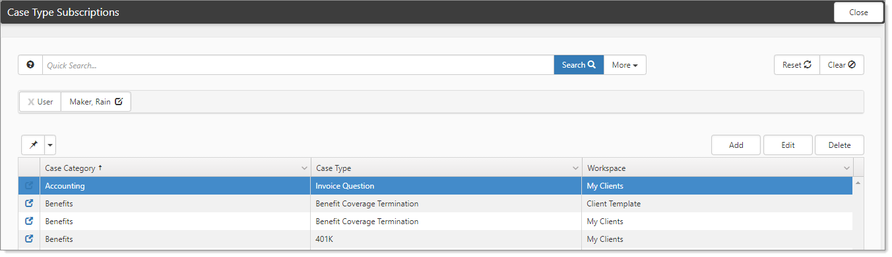

Some case types are more time sensitive than others. One way to keep up with particular case types is through subscriptions. You can subscribe to an individual case by adding yourself to the notification list on the case itself. However. the most efficient way receive notifications on cases of a particular type is through the Case Type Subscriptions module.
This topic describes Case Type Subscriptions and how to manage them through the Case Type Subscriptions module. The Case Type Subscriptions module allows you to subscribe to specific case types either by:
Individual workspace (filtered by the workspaces to which the selected user has access),
Or by selecting My Clients, which subscribes the user to the selected case type for any workspace where they are a member of the Client Team role in workspace security settings.
The Case Type Subscription module displays a list of subscriptions for the current user. From this module you can add, edit, or delete case type subscriptions so that you can easily customize the case notifications you receive.
To subscribe to a case:
On the modules bar, select Case Type Subscriptions.
The Case Type Subscriptions dashboard opens.

Click Add.
The Subscription Selection form opens.
For User, select a user.
The selected user who is to receive notifications for cases of this type. Administrator users can either subscribe themselves or add subscriptions for other users by selecting a different user in the list. User selection is limited to Global Admin users.
For Workspace, select the workspace from which you would like to receive these case type notifications.
To subscribe to the selected case type for any workspace where you are on the Client Team dataform in the workspace, choose My Clients.
Global admin uses can either subscribe themselves in the same way or add subscriptions for other users by selecting a different user.
For Category, select a category for the case.
For Type, select a Type for which you would like to receive the notifications. This list is filtered by the selected Category.
Case Type Subscription follows the
 Watch the video about Using Case Type Subscriptions.
Watch the video about Using Case Type Subscriptions.
To watch the video about Using Case Type Subscriptions, see